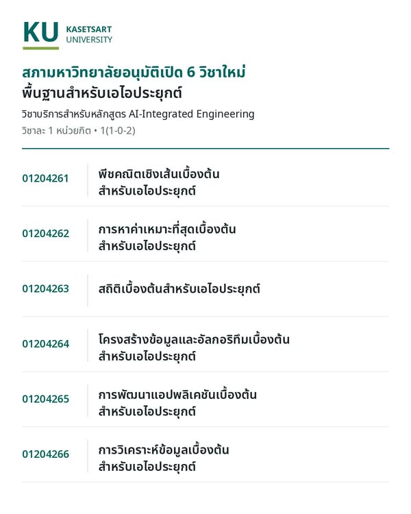

6 วิชาพื้นฐาน AIEP เสริมความรู้ AI ควบคู่ศาสตร์เดิม


ในโพสต์วันที่ 27 ตุลาคม 2569 ผมแจ้งว่า สภามหาวิทยาลัยอนุมัติวิชาพื้นฐานสำหรับ AIEP แล้ว วิชาชุดนี้ออกแบบให้บรรจุในหลักสูตรต่าง ๆ ของมหาวิทยาลัยเกษตรศาสตร์ได้ เพื่อให้นิสิตมีพื้นฐานเพียงพอจะนำ AI ไปใช้กับงานในสาขาของตัวเองอย่างมืออาชีพ โดยยังคงความเข้มแข็งของความรู้ในศาสตร์เดิม
สำหรับนิสิตวิศวกรรมศาสตร์ เป้าหมายคือ รู้ลึกในสาขาและใช้ AI เป็น ทั้งในการทำงานและการวิจัย ไม่ว่าจะเรียนเครื่องกล โยธา ไฟฟ้า หรือสาขาอื่น แนวคิดนี้ยังขยายไปสู่นิสิตประมง อุตสาหกรรมเกษตร เศรษฐศาสตร์ และป่าไม้ ที่สามารถพัฒนาความรู้ AI ควบคู่กับความเข้าใจปัญหาในสาขาของตน
6 วิชาวางพื้นฐานสำหรับการใช้ AI ในสาขาต่าง ๆ
ภาพประกอบระบุว่าเป็น วิชาบริการสำหรับหลักสูตร AI-Integrated Engineering วิชาละ 1 หน่วยกิต รูปแบบ 1(1-0-2) โดยมีรหัสและหัวข้อพื้นฐานดังนี้
| รหัสวิชา | พื้นฐานสำหรับเอไอประยุกต์ |
|---|---|
| 01204261 | พีชคณิตเชิงเส้นเบื้องต้น |
| 01204262 | การหาค่าเหมาะที่สุดเบื้องต้น |
| 01204263 | สถิติเบื้องต้น |
| 01204264 | โครงสร้างข้อมูลและอัลกอริทึมเบื้องต้น |
| 01204265 | การพัฒนาแอปพลิเคชันเบื้องต้น |
| 01204266 | การวิเคราะห์ข้อมูลเบื้องต้น |
เส้นทางปริญญาตรี + 1 ปี ยังต้องผ่านเงื่อนไขของหลักสูตร
AIEP วางเส้นทางไว้แบบ ปริญญาตรี + 1 ปี โดยเรียนปริญญาตรีในสาขาเดิม แล้วมีทางเลือกต่อปริญญาโทด้าน AI ที่สอนโดยภาควิชาวิศวกรรมคอมพิวเตอร์ ทั้งนี้ ต้องผ่านเกณฑ์รับเข้าศึกษาและเงื่อนไขของหลักสูตร
หลักสูตรที่ร่วมมือกับภาควิชาอยู่แล้วสามารถเริ่มวางแผนบรรจุวิชาชุดนี้ และหารือรายละเอียดร่วมกันต่อไป เพื่อให้นิสิตได้พัฒนาความรู้ AI ควบคู่กับความรู้ในสาขาที่เรียน